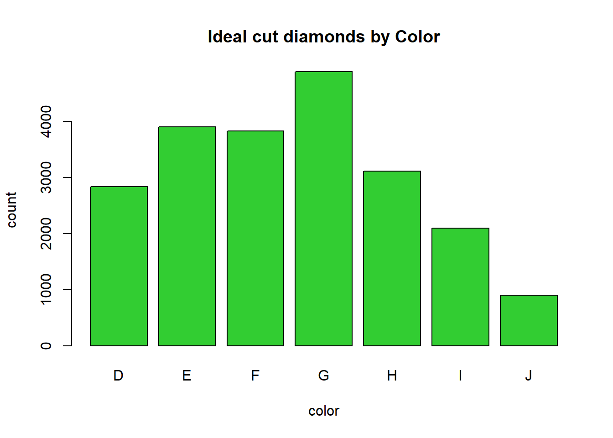
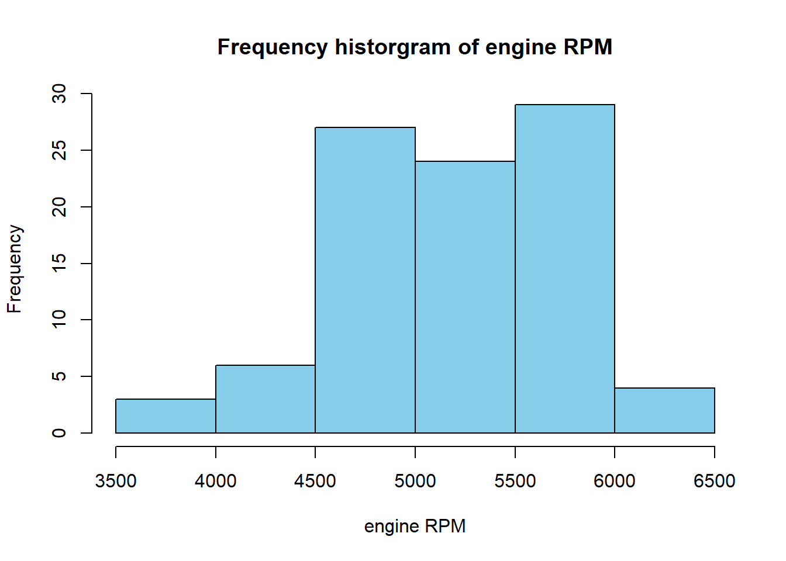
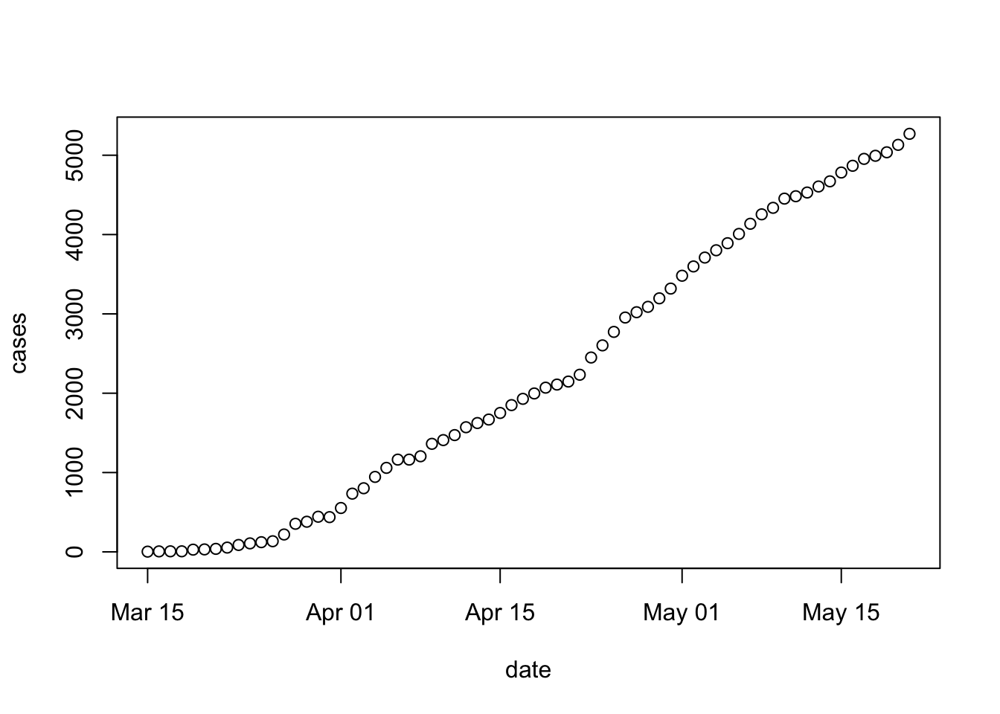

Week 2 The data frame
2.1 Day 8 (Monday) Zoom check-in
Logistics
Remember to use the QuaRantine Microsoft Team. Your Roswell credentials are required, and you must have been invited (by Adam.Kisailus at RoswellPark.org)
We’re thinking of having a ‘networking’ hour after Friday’s class (so 3pm and after) where we’ll break into smaller groups (if necessary) and provide an opportunity for people to turn on their video and audio so that we can increase the amount of intereaction. Likely the first networking hour will be a round of introductions / what you hope to get out of the course / etc., and maybe brief discussion of topics arising.
Review and troubleshoot (15 minutes)
Saving and loading objects
Scripts
The data frame (40 minutes)
Concept
Recall from Day 1:
Data frames are handy containers for experimental data.
Like a spreadsheet, a data frame has rows and columns
The columns of a data frame contain measurements describing each individual
- Each measurement could refer to a different type of object (numeric, string, etc.)
- Measurements could be physical observations on samples, e.g.,
height,weight,age,minutesan activity lasts, etc. - Measurements might also describe how the row is classified, e.g.,
activity,is work?,classification,date, etc.
The rows of a data frame represent a ‘tuple’ of measurements corresponding to an experimental observation, e.g.,
- Note: you must ensure units are consistent across tuples!
Rows and columns can be assigned names.
Create a simple data frame
heights <- c(72, 65, 68)
weights <- c(190, 130, 150)
ages <- c(44, 35, 37)
df <- data.frame(heights, weights, ages)
df
## heights weights ages
## 1 72 190 44
## 2 65 130 35
## 3 68 150 37It’s possible to update the column names, and to provide row names…
named_df <- data.frame(heights, weights, ages)
colnames(named_df) <- c("hgt_inches", "wgt_lbs", "age_years")
rownames(named_df) <- c("John Doe", "Pat Jones", "Sara Grant")
named_df
## hgt_inches wgt_lbs age_years
## John Doe 72 190 44
## Pat Jones 65 130 35
## Sara Grant 68 150 37…but it’s often better practice to name columns at time of creation, and to store all information as columns (rather than designating one column as a ‘special’ row name)
Here’s our first attempt
It’s unsatisfactory because by default R treats character vectors as
factor. We’d like them to plain-old character vectors. To accomplish this, we add thestringsAsFactors = FALSEargument
Adding and deleting rows
Adding rows
Add a row with
rbind()more_people <- c("Bob Kane", "Kari Patra", "Sam Groe") more_heights <- c(61, 68, 70) more_weights <- c(101, 134, 175) more_ages <- c(13, 16, 24) more_df <- data.frame( person = more_people, hgt_inches = more_heights, wgt_lbs = more_weights, age_years = more_ages, stringsAsFactors = FALSE ) df_all <- rbind(df, more_df) df_all ## person hgt_inches wgt_lbs age_years ## 1 John Doe 72 190 44 ## 2 Pat Jones 65 130 35 ## 3 Sara Grant 68 150 37 ## 4 Bob Kane 61 101 13 ## 5 Kari Patra 68 134 16 ## 6 Sam Groe 70 175 24R often has more than one way to perform an operation. We’ll see
add_rows()later in the course.
Delete rows using a logical vector…
Create a logical or numeric index indicating the rows to be deleted
Subset the data frame with the logical vector indicating the rows we would like to keep
…or a numeric vector
Create a vector containing the rows to be deleted
Use a minus sign
-to indicated that these rows should be dropped, rather than keptdf_all # referesh my memory about df contents .... ## person hgt_inches wgt_lbs age_years ## 1 John Doe 72 190 44 ## 2 Pat Jones 65 130 35 ## 3 Sara Grant 68 150 37 ## 4 Bob Kane 61 101 13 ## 5 Kari Patra 68 134 16 ## 6 Sam Groe 70 175 24 df_remaining <- df_all[-dropouts, ] df_remaining # items 2 and 3 are dropped! ## person hgt_inches wgt_lbs age_years ## 1 John Doe 72 190 44 ## 4 Bob Kane 61 101 13 ## 5 Kari Patra 68 134 16 ## 6 Sam Groe 70 175 24
Some useful data frame operations
Try these out on your simple data frames df and named_df:
str(df) # structure (NOT string!)(sorry Python programmers ;)dim(df) # dimensionsView(df) # open tabular view of data framehead(df) # first few rowstail(df) # last few rowsnames(df) # column namescolnames(df) # column namesrownames(df) # row names
Writing, reading, and spreadhseets
Saving a data.frame
We could save the
data.frameas an R object, using the methods from quarantine day 7Often, better practice (e.g., to make it easy to share data with others in our lab) is to save data as a text file
A ‘csv’ file is one example
- A plain text file
- The first line contains column names
- Each line of the text file represents a row of the data frame
- Columns within a row are separated by a comma,
,
Example: save
df_allto a temporary file locationnow, read the data back in from the temporary location
R and spreadsheets
A CSV file is a common way to move data from R to a spreadsheet, and vice versa. Following along with the example above, write
df_allto a CSV file.Now open a spreadsheet application like Excel and navigate to the directory containing the file

… and open the file

To go from Excel to R, make sure your spreadsheet is a simple rectangular table of rows and columns, without ‘merged’ cells or fancy column formating, or… i.e., your spreadsheet should be as simple as the one we imported from R. Then save the file in CSV format

…and import it into R
An alternative way of working with data.frame()
with(): column selection and computationwithin(): update or add columnssubset(): row and column subsetOur quarantine log, day 1
activity <- c("check e-mail", "breakfast", "conference call", "webinar", "walk") minutes <- c(20, 30, 60, 60, 60) is_work <- c(TRUE, FALSE, TRUE, TRUE, FALSE) levels <- c("connect", "exercise", "consult", "hobby", "essential") classification <- factor( c("connect", "essential", "connect", "consult", "exercise"), levels = levels ) dates <- rep("04-14-2020", length(activity)) date <- as.Date(dates, format = "%m-%d-%Y") log <- data.frame( activity, minutes, is_work, classification, date, stringsAsFactors = FALSE ) log ## activity minutes is_work classification date ## 1 check e-mail 20 TRUE connect 2020-04-14 ## 2 breakfast 30 FALSE essential 2020-04-14 ## 3 conference call 60 TRUE connect 2020-04-14 ## 4 webinar 60 TRUE consult 2020-04-14 ## 5 walk 60 FALSE exercise 2020-04-14
Summarization
- Use
with()to simplify variable reference Create a new
data.frame()containing the summary
Summarization by group
aggregate()## minutes per day spent on each activity, from the quarantine_log aggregate(minutes ~ activity, log, sum) ## activity minutes ## 1 breakfast 30 ## 2 check e-mail 20 ## 3 conference call 60 ## 4 walk 60 ## 5 webinar 60 ## minutes per day spent on each clasasification aggregate(minutes ~ classification, log, sum) ## classification minutes ## 1 connect 80 ## 2 exercise 60 ## 3 consult 60 ## 4 essential 30 ## non-work activities per day aggregate(!is_work ~ date, log, sum) ## date !is_work ## 1 2020-04-14 2
This week’s activities (5 minutes)
Goal: retrieve and summarize COVID 19 cases in Erie county and nationally
2.2 Day 9: Creation and manipulation
Creation
Last week we created vectors summarizing our quarantine activities
activity <- c("check e-mail", "breakfast", "conference call", "webinar", "walk")
minutes <- c(20, 30, 60, 60, 60)
is_work <- c(TRUE, FALSE, TRUE, TRUE, FALSE)
levels <- c("connect", "exercise", "consult", "hobby", "essential")
classification <- factor(
c("connect", "essential", "connect", "consult", "exercise"),
levels = levels
)
dates <- rep("04-14-2020", length(activity))
date <- as.Date(dates, format = "%m-%d-%Y")Each of these vectors is the same length, and are related to one another in a specific way – the first element of activity, ‘check e-mail’, is related to the first element of minutes, ‘20’, and to is_work, etc.
Use data.frame() to construct an object containing each of these vectors
Each argument to
data.frame()is a vector representing a columnThe
stringsAsFactors = FALSEargument says that character vectors should NOT be automatically coerced to factorsactivities <- data.frame( activity, minutes, is_work, classification, date, stringsAsFactors = FALSE ) activities ## activity minutes is_work classification date ## 1 check e-mail 20 TRUE connect 2020-04-14 ## 2 breakfast 30 FALSE essential 2020-04-14 ## 3 conference call 60 TRUE connect 2020-04-14 ## 4 webinar 60 TRUE consult 2020-04-14 ## 5 walk 60 FALSE exercise 2020-04-14We can query the object we’ve created for its
class(),dim()ensions, take a look at thehead()ortail()of the object, etc.names()returns the column names.class(activities) ## [1] "data.frame" dim(activities) # number of rows and columns ## [1] 5 5 head(activities, 3) # first three rows ## activity minutes is_work classification date ## 1 check e-mail 20 TRUE connect 2020-04-14 ## 2 breakfast 30 FALSE essential 2020-04-14 ## 3 conference call 60 TRUE connect 2020-04-14 names(activities) ## [1] "activity" "minutes" "is_work" "classification" ## [5] "date"
Column selection
Use [ to select rows and columns
activitiesis a two-dimensional objectSubset the data to contain the first and third rows and the first and fourth columns
Subset columns by name
Subset only by row or only by column by omiting the subscript index for that dimension
activities[c(1, 3), ] # all columns for rows 1 and 3 ## activity minutes is_work classification date ## 1 check e-mail 20 TRUE connect 2020-04-14 ## 3 conference call 60 TRUE connect 2020-04-14 activities[, c("activity", "minutes")] # all rows for columns 1 and 2 ## activity minutes ## 1 check e-mail 20 ## 2 breakfast 30 ## 3 conference call 60 ## 4 webinar 60 ## 5 walk 60Be careful when selecting a single column!
By default, R returns a vector
Use
drop = FALSEto return adata.frame
Use $ or [[ to select a column
Selection of individual columns as vectors is easy
An alternative, often used in scripts, is to use
[[, which requires the name of a variable provided as a character vector
Column selection and subsetting are often combined, e.g., to create a data.frame of work-related activities, or work-related activities lasting 60 minutes or longer
work_related_activities <- activities[ activities$is_work == TRUE, ]
work_related_activities
## activity minutes is_work classification date
## 1 check e-mail 20 TRUE connect 2020-04-14
## 3 conference call 60 TRUE connect 2020-04-14
## 4 webinar 60 TRUE consult 2020-04-14
row_idx <- activities$is_work & (activities$minutes >= 60)
activities[row_idx,]
## activity minutes is_work classification date
## 3 conference call 60 TRUE connect 2020-04-14
## 4 webinar 60 TRUE consult 2020-04-14Adding or updating columns
Use $ or [ or [[ to add a new column,
activities$is_long_work <- activities$is_work & (activities$minutes >= 60)
activities
## activity minutes is_work classification date is_long_work
## 1 check e-mail 20 TRUE connect 2020-04-14 FALSE
## 2 breakfast 30 FALSE essential 2020-04-14 FALSE
## 3 conference call 60 TRUE connect 2020-04-14 TRUE
## 4 webinar 60 TRUE consult 2020-04-14 TRUE
## 5 walk 60 FALSE exercise 2020-04-14 FALSE
## ...another way of doing the same thing
activities[["is_long_work"]] <- activities$is_work & (activities$minutes >= 60)
## ...and another way
activities[,"is_long_work"] <- activities$is_work & (activities$minutes >= 60)Columns can be updated in the same way
activities$activity <- toupper(activities$activity)
activities
## activity minutes is_work classification date is_long_work
## 1 CHECK E-MAIL 20 TRUE connect 2020-04-14 FALSE
## 2 BREAKFAST 30 FALSE essential 2020-04-14 FALSE
## 3 CONFERENCE CALL 60 TRUE connect 2020-04-14 TRUE
## 4 WEBINAR 60 TRUE consult 2020-04-14 TRUE
## 5 WALK 60 FALSE exercise 2020-04-14 FALSEReading and writing
Create a file path to store a ‘csv’ file. From day 7, the path could be temporary, chosen interactively, a relative path, or an absolute path
## could be any of these...
##
## interactive_file_path <- file.choose(new = TRUE)
## getwd()
## relative_file_path <- "my_activity.rds"
## absolute_file_path_on_macOS <- "/Users/ma38727/my_activity.rda"
##
## ... but we'll use
temporary_file_path <- tempfile(fileext = ".csv")Use write.csv() to save the data.frame to disk as a plain text file in ‘csv’ (comma-separated value) format. The row.names = FALSE argument means that the row indexes are not saved to the file (row names are created when data is read in using read.csv()).
If you wish, use RStudio File -> Open File to navigate to the location where you saved the file, and open it. You could also open the file in Excel or other spreadsheet. Conversely, you can take an Excel sheet and export it as a csv file for reading into R.
Use read.csv() to import a plain text file formatted as csv
imported_activities <- read.csv(temporary_file_path, stringsAsFactors = FALSE)
imported_activities
## activity minutes is_work classification date is_long_work
## 1 CHECK E-MAIL 20 TRUE connect 2020-04-14 FALSE
## 2 BREAKFAST 30 FALSE essential 2020-04-14 FALSE
## 3 CONFERENCE CALL 60 TRUE connect 2020-04-14 TRUE
## 4 WEBINAR 60 TRUE consult 2020-04-14 TRUE
## 5 WALK 60 FALSE exercise 2020-04-14 FALSENote that some information has not survived the round-trip – the classification and date columns are plain character vectors.
class(imported_activities$classification)
## [1] "character"
class(imported_activities$date)
## [1] "character"Update these to be a factor() with specific levels, and a Date.
`
levels <- c("connect", "exercise", "consult", "hobby", "essential")
imported_activities$classification <- factor(
imported_activities$classification,
levels = levels
)
imported_activities$date <- as.Date(imported_activities$date, format = "%Y-%m-%d")
imported_activities
## activity minutes is_work classification date is_long_work
## 1 CHECK E-MAIL 20 TRUE connect 2020-04-14 FALSE
## 2 BREAKFAST 30 FALSE essential 2020-04-14 FALSE
## 3 CONFERENCE CALL 60 TRUE connect 2020-04-14 TRUE
## 4 WEBINAR 60 TRUE consult 2020-04-14 TRUE
## 5 WALK 60 FALSE exercise 2020-04-14 FALSEReading from a remote file (!)
Visit the New York Times csv file daily tally of COVID-19 cases in all US counties.
Read the data into an R
data.frameExplore the data
class(us) ## [1] "data.frame" dim(us) ## [1] 72988 6 head(us) ## date county state fips cases deaths ## 1 2020-01-21 Snohomish Washington 53061 1 0 ## 2 2020-01-22 Snohomish Washington 53061 1 0 ## 3 2020-01-23 Snohomish Washington 53061 1 0 ## 4 2020-01-24 Cook Illinois 17031 1 0 ## 5 2020-01-24 Snohomish Washington 53061 1 0 ## 6 2020-01-25 Orange California 6059 1 0Subset the data to only New York state or Erie county
ny_state <- us[us$state == "New York",] dim(ny_state) ## [1] 1956 6 erie <- us[(us$state == "New York") & (us$county == "Erie"), ] erie ## date county state fips cases deaths ## 2569 2020-03-15 Erie New York 36029 3 0 ## 3028 2020-03-16 Erie New York 36029 6 0 ## 3544 2020-03-17 Erie New York 36029 7 0 ## 4141 2020-03-18 Erie New York 36029 7 0 ## 4870 2020-03-19 Erie New York 36029 28 0 ## 5717 2020-03-20 Erie New York 36029 31 0 ## 6711 2020-03-21 Erie New York 36029 38 0 ## 7805 2020-03-22 Erie New York 36029 54 0 ## 9003 2020-03-23 Erie New York 36029 87 0 ## 10314 2020-03-24 Erie New York 36029 107 0 ## 11754 2020-03-25 Erie New York 36029 122 0 ## 13367 2020-03-26 Erie New York 36029 134 2 ## 15111 2020-03-27 Erie New York 36029 219 6 ## 16951 2020-03-28 Erie New York 36029 354 6 ## 18888 2020-03-29 Erie New York 36029 380 6 ## 20938 2020-03-30 Erie New York 36029 443 8 ## 23079 2020-03-31 Erie New York 36029 438 8 ## 25283 2020-04-01 Erie New York 36029 553 12 ## 27544 2020-04-02 Erie New York 36029 734 19 ## 29866 2020-04-03 Erie New York 36029 802 22 ## 32254 2020-04-04 Erie New York 36029 945 26 ## 34687 2020-04-05 Erie New York 36029 1059 27 ## 37160 2020-04-06 Erie New York 36029 1163 30 ## 39674 2020-04-07 Erie New York 36029 1163 36 ## 42227 2020-04-08 Erie New York 36029 1205 38 ## 44803 2020-04-09 Erie New York 36029 1362 46 ## 47417 2020-04-10 Erie New York 36029 1409 58 ## 50071 2020-04-11 Erie New York 36029 1472 62 ## 52744 2020-04-12 Erie New York 36029 1571 75 ## 55428 2020-04-13 Erie New York 36029 1624 86 ## 58128 2020-04-14 Erie New York 36029 1668 99 ## 60844 2020-04-15 Erie New York 36029 1751 110 ## 63572 2020-04-16 Erie New York 36029 1850 115 ## 66316 2020-04-17 Erie New York 36029 1929 115 ## 69074 2020-04-18 Erie New York 36029 1997 115 ## 71842 2020-04-19 Erie New York 36029 2070 146
2.3 Day 10: subset(), with(), and within()
subset()
subset()ing a data.frame
Read the New York Times csv file summarizing COVID cases in the US.
Create subsets, e.g., to include only New York state, or only Erie county
ny_state <- subset(us, state == "New York") dim(ny_state) ## [1] 1956 6 tail(ny_state) ## date county state fips cases deaths ## 71881 2020-04-19 Warren New York 36113 96 6 ## 71882 2020-04-19 Washington New York 36115 63 0 ## 71883 2020-04-19 Wayne New York 36117 50 0 ## 71884 2020-04-19 Westchester New York 36119 23803 831 ## 71885 2020-04-19 Wyoming New York 36121 36 3 ## 71886 2020-04-19 Yates New York 36123 9 0 erie <- subset(us, (state == "New York") & county == "Erie") dim(erie) ## [1] 36 6 tail(erie) ## date county state fips cases deaths ## 58128 2020-04-14 Erie New York 36029 1668 99 ## 60844 2020-04-15 Erie New York 36029 1751 110 ## 63572 2020-04-16 Erie New York 36029 1850 115 ## 66316 2020-04-17 Erie New York 36029 1929 115 ## 69074 2020-04-18 Erie New York 36029 1997 115 ## 71842 2020-04-19 Erie New York 36029 2070 146
with()
Use with() to simplify column references
Goal: calculate maximum number of cases in the Erie county data subset
First argument: a
data.framecontaining data to be manipulated –erieSecond argument: an expression to be evaluated, usually referencing columns in the data set –
max(cases)E.g., Calculate the maximum number of cases in the
eriesubset
Second argument can be more complicated, using {} to enclose several lines.
E.g., Calculate the number of new cases, and then reports the average number of new cases per day. We will use
diff()diff()calculates the difference between successive values of a vectorThe length of
diff(x)is one less than the length ofx
new_casesis thediff()of successive values ofcases, with an implicit initial value equal to 0.
within()
Adding and updating columns within() a data.frame
First argument: a
data.framecontaining data to be updated –erieSecond argument: an expression of one or more variable assignments, the assignments create new columns in the
data.frame.Example: add a
new_casescolumnerie_new_cases <- within(erie, { new_cases <- diff(c(0, cases)) }) head(erie_new_cases) ## date county state fips cases deaths new_cases ## 2569 2020-03-15 Erie New York 36029 3 0 3 ## 3028 2020-03-16 Erie New York 36029 6 0 3 ## 3544 2020-03-17 Erie New York 36029 7 0 1 ## 4141 2020-03-18 Erie New York 36029 7 0 0 ## 4870 2020-03-19 Erie New York 36029 28 0 21 ## 5717 2020-03-20 Erie New York 36029 31 0 3
2.4 Day 11: aggregate() and an initial work flow
aggregate() for summarizing columns by group
Goal: summarize maximum number of cases by county in New York state
Setup
Read and subset the New York Times data to contain only New York state data
aggregate()
First argument: a formula –
cases ~ countyRight-hand side: the variable to be used to subset (group) the data –
countyLeft-hand side: the variable to be used in the aggregation function –
cases
Second argument: source of data –
ny_stateThird argument: the function to be applied to each subset of data –
maxMaximum number of cases by county:
Exploring the data summary
Subset to some interesting ‘counties’
head(max_cases_by_county) ## county cases ## 1 Albany 682 ## 2 Allegany 30 ## 3 Broome 192 ## 4 Cattaraugus 34 ## 5 Cayuga 36 ## 6 Chautauqua 25 subset( max_cases_by_county, county %in% c("New York City", "Westchester", "Erie") ) ## county cases ## 14 Erie 2070 ## 29 New York City 134446 ## 57 Westchester 23803
Help: ?aggregate.formula
An initial work flow
Data input
From a remote location
url <- "https://raw.githubusercontent.com/nytimes/covid-19-data/master/us-counties.csv" us <- read.csv(url, stringsAsFactors = FALSE)class(us) ## [1] "data.frame" dim(us) ## [1] 72988 6 head(us) ## date county state fips cases deaths ## 1 2020-01-21 Snohomish Washington 53061 1 0 ## 2 2020-01-22 Snohomish Washington 53061 1 0 ## 3 2020-01-23 Snohomish Washington 53061 1 0 ## 4 2020-01-24 Cook Illinois 17031 1 0 ## 5 2020-01-24 Snohomish Washington 53061 1 0 ## 6 2020-01-25 Orange California 6059 1 0
Cleaning
dateis a plain-oldcharactervector, but should be aDate.Update, method 1
us$date <- as.Date(us$date, format = "%Y-%m-%d") head(us) ## date county state fips cases deaths ## 1 2020-01-21 Snohomish Washington 53061 1 0 ## 2 2020-01-22 Snohomish Washington 53061 1 0 ## 3 2020-01-23 Snohomish Washington 53061 1 0 ## 4 2020-01-24 Cook Illinois 17031 1 0 ## 5 2020-01-24 Snohomish Washington 53061 1 0 ## 6 2020-01-25 Orange California 6059 1 0Update, method 2
us <- within(us, { date = as.Date(date, format = "%Y-%m-%d") }) head(us) ## date county state fips cases deaths ## 1 2020-01-21 Snohomish Washington 53061 1 0 ## 2 2020-01-22 Snohomish Washington 53061 1 0 ## 3 2020-01-23 Snohomish Washington 53061 1 0 ## 4 2020-01-24 Cook Illinois 17031 1 0 ## 5 2020-01-24 Snohomish Washington 53061 1 0 ## 6 2020-01-25 Orange California 6059 1 0
Subset to only Erie county, New York state
Subset, method 1
Subset, method 2
Manipulation
Goal: calculate
new_casesas the difference between succesive days, usingdiff()Remember use of
diff()Update, methods 1 & 2 (prepend a
0when usingdiff(), to get the intial number of new cases)
Summary: calculate maximum (total) number of cases per county in New York state
For Erie county, let’s see how to calculate the maximum (total) number of cases
Subset US data to New York state
Summarize each county in the state using
aggregate().First argument: summarize
casesgrouped bycounty–cases ~ countySecond argument: data source –
ny_stateThird argument: function to apply to each subset –
max
subset()to select counties
Summary: calculate maximum (total) number of cases per state
Use entire data set,
usaggregate()cases by county and state –cases ~ county + statemax_cases_by_county_state <- aggregate( cases ~ county + state, us, max ) dim(max_cases_by_county_state) ## [1] 2801 3 head(max_cases_by_county_state) ## county state cases ## 1 Autauga Alabama 27 ## 2 Baldwin Alabama 114 ## 3 Barbour Alabama 20 ## 4 Bibb Alabama 28 ## 5 Blount Alabama 21 ## 6 Bullock Alabama 9aggregate()a second time, usingmax_cases_by_county_stateand aggregtaing by stateExplore the data
head(max_cases_by_state) ## state cases ## 1 Alabama 682 ## 2 Alaska 154 ## 3 Arizona 2589 ## 4 Arkansas 377 ## 5 California 12341 ## 6 Colorado 1784 subset( max_cases_by_state, state %in% c("California", "Illinois", "New York", "Washington") ) ## state cases ## 5 California 12341 ## 15 Illinois 21272 ## 34 New York 134446 ## 52 Washington 5174
2.5 Day 12 (Friday) Zoom check-in
Review and troubleshoot (20 minutes)
## retrieve and clean the current data set
url <- "https://raw.githubusercontent.com/nytimes/covid-19-data/master/us-counties.csv"
us <- read.csv(url, stringsAsFactors = FALSE)
us <- within(us, {
date = as.Date(date, format = "%Y-%m-%d")
})
## subset
erie <- subset(us, (county == "Erie") & (state == "New York"))
## manipulate
erie <- within(erie, {
new_cases <- diff( c(0, cases) )
})
## record of cases to date
erie
## date county state fips cases deaths new_cases
## 2569 2020-03-15 Erie New York 36029 3 0 3
## 3028 2020-03-16 Erie New York 36029 6 0 3
## 3544 2020-03-17 Erie New York 36029 7 0 1
## 4141 2020-03-18 Erie New York 36029 7 0 0
## 4870 2020-03-19 Erie New York 36029 28 0 21
## 5717 2020-03-20 Erie New York 36029 31 0 3
## 6711 2020-03-21 Erie New York 36029 38 0 7
## 7805 2020-03-22 Erie New York 36029 54 0 16
## 9003 2020-03-23 Erie New York 36029 87 0 33
## 10314 2020-03-24 Erie New York 36029 107 0 20
## 11754 2020-03-25 Erie New York 36029 122 0 15
## 13367 2020-03-26 Erie New York 36029 134 2 12
## 15111 2020-03-27 Erie New York 36029 219 6 85
## 16951 2020-03-28 Erie New York 36029 354 6 135
## 18888 2020-03-29 Erie New York 36029 380 6 26
## 20938 2020-03-30 Erie New York 36029 443 8 63
## 23079 2020-03-31 Erie New York 36029 438 8 -5
## 25283 2020-04-01 Erie New York 36029 553 12 115
## 27544 2020-04-02 Erie New York 36029 734 19 181
## 29866 2020-04-03 Erie New York 36029 802 22 68
## 32254 2020-04-04 Erie New York 36029 945 26 143
## 34687 2020-04-05 Erie New York 36029 1059 27 114
## 37160 2020-04-06 Erie New York 36029 1163 30 104
## 39674 2020-04-07 Erie New York 36029 1163 36 0
## 42227 2020-04-08 Erie New York 36029 1205 38 42
## 44803 2020-04-09 Erie New York 36029 1362 46 157
## 47417 2020-04-10 Erie New York 36029 1409 58 47
## 50071 2020-04-11 Erie New York 36029 1472 62 63
## 52744 2020-04-12 Erie New York 36029 1571 75 99
## 55428 2020-04-13 Erie New York 36029 1624 86 53
## 58128 2020-04-14 Erie New York 36029 1668 99 44
## 60844 2020-04-15 Erie New York 36029 1751 110 83
## 63572 2020-04-16 Erie New York 36029 1850 115 99
## 66316 2020-04-17 Erie New York 36029 1929 115 79
## 69074 2020-04-18 Erie New York 36029 1997 115 68
## 71842 2020-04-19 Erie New York 36029 2070 146 73
## aggregate() cases in each county to find total (max) number
ny_state <- subset(us, state == "New York")
head( aggregate(cases ~ county, ny_state, max) )
## county cases
## 1 Albany 682
## 2 Allegany 30
## 3 Broome 192
## 4 Cattaraugus 34
## 5 Cayuga 36
## 6 Chautauqua 25Visualization (20 minutes)
plot with a formula argument
formula =: use~(tilde) to describe the relationship to be plotted –y-axis-variable ~ x-axis-variabledata =:data.framecontaining the variables to be plotted
Additional arguments control, e.g., point shape used for plotting (
pch =), log-transformation of axes (log =), title (main =)plot( new_cases ~ date, erie, log = "y", main = "Erie County" ) ## Warning in xy.coords(x, y, xlabel, ylabel, log): 3 y values <= 0 omitted from ## logarithmic plot
Help!
?plot.formula?plot.default
Functions (20 minutes)
Anatomy of a function
Symbol representing the variable that will be used to hold the function
functionkey word, followed by required (no default value) and optional argumentsbodydefining the what the function is supposed to do, enclosed in braces{,}. The body uses variables passed in as arguments, as well as other functions in base R.plot_county <- function(us_data, which_state = "New York", which_county = "Erie") { ## subset to state and county county <- subset(us_data, (state == which_state) & (county == which_county)) ## calculate new_cases county <- within(county, { new_cases <- diff( c(0, cases) ) }) ## create title and plot title <- paste0(which_county, ", ", which_state) plot( new_cases ~ date, county, log = "y", main = title ) }
Use
Provide all arguments…

… or use one or more defaults
plot_county(us, which_county = "Erie") ## Warning in xy.coords(x, y, xlabel, ylabel, log): 3 y values <= 0 omitted from ## logarithmic plot
plot_county(us, "Washington", "King") # Seattle ## Warning in xy.coords(x, y, xlabel, ylabel, log): 1 y value <= 0 omitted from ## logarithmic plot
2.6 Day 13: Basic visualization
Let’s get the current Erie county data, and create the new_cases column
## retrieve and clean the current data set
url <- "https://raw.githubusercontent.com/nytimes/covid-19-data/master/us-counties.csv"
us <- read.csv(url, stringsAsFactors = FALSE)
us <- within(us, {
date = as.Date(date, format = "%Y-%m-%d")
})
## get the Erie county subset
erie <- subset(us, (county == "Erie") & (state == "New York"))
## add the `new_cases` column
erie <- within(erie, {
new_cases <- diff( c(0, cases) )
})Simple visualization
We’ll use the
plot()function to create a visualization of the progression of COVID cases in Erie county.plot()can be used with aformula, similar to how we usedaggregate().The
formuladescribes the independent (y-axis) variable as a function of the dependent (x-axis) variableFor our case, the formula will be
cases ~ date, i.e., plot the number of cases on the y-axis, and date on the x-axis.As with
aggregate(), we need to provide, in the second argument, thedata.framewhere the variables to be plotted can be found.Ok, here we go…

It might be maybe more informative to plot new cases (so that we can see more easily whether social distancing and other measures are having an effect on the spread of COVID cases. Using log-transformed new cases helps to convey the proportional increase
plot( new_cases ~ date, erie, log = "y", main = "New Cases, Erie County" ) ## Warning in xy.coords(x, y, xlabel, ylabel, log): 3 y values <= 0 omitted from ## logarithmic plot
See
?plot.formulafor some options available when using the formula interface to plot. Additional arguments are described on the help page?help.default.
2.7 Day 14: Functions
Yesterday we created a plot for Erie county. The steps to create this plot can be separated into two parts
Get the full data
Subset, update, and plot the data for county of interest
erie <- subset(us, (county == "Erie") & (state == "New York")) erie <- within(erie, { new_cases <- diff( c(0, cases) ) }) plot( new_cases ~ date, erie, log = "y", main = "New Cases, Erie County" ) ## Warning in xy.coords(x, y, xlabel, ylabel, log): 3 y values <= 0 omitted from ## logarithmic plot
What if we were interested in a different county? We could repeat (cut-and-paste) step 2, updating and generalizing a little
Define a new variable to indicate the county we are interested in plotting
paste()concatenates its arguments together into a single character vector. We use this to construct the title of the plotNow create and update a subset of the data for the county that we are interested in
… and finally plot the county data

Here is the generalization
county_of_interest <- "Westchester" main_title <- paste("New Cases,", county_of_interest, "County") county_data <- subset(us_data, (county == county_of_interest) & (state == "New York")) county_data <- within(county_data, { new_cases <- diff( c(0, cases) ) }) plot( new_cases ~ date, county_data, log = "y", main = main_title)
It would be tedious and error-prone to copy and paste this code for each county we were interested in.
A better approach is to write a function that takes as inputs the us data.frame, and the name of the county that we want to plot. Functions are easy to write
Create a variable to contain the function, use the keyword
functionand then the arguments you want to pass in.… then provide the ‘body’ of the function between curly braces
Normally, the last evaluated line of the code (the
plot()statement in our example) is returned from the function and can be captured by a variable. In our specific case,plot()creates the plot as a side effect, and the return value is actually the special symbolNULL.Here’s the full definition
plot_county <- function(us_data, county_of_interest) { main_title <- paste("New Cases,", county_of_interest, "County") county_data <- subset(us_data, (county == county_of_interest) & (state == "New York")) county_data <- within(county_data, { new_cases <- diff( c(0, cases) ) }) plot( new_cases ~ date, county_data, log = "y", main = main_title) }Run the code defining the function in the R console, then use it to plot different counties:
plot_county(us, "Erie") ## Warning in xy.coords(x, y, xlabel, ylabel, log): 3 y values <= 0 omitted from ## logarithmic plot

Hmm, come to think of it, we might want to write a simple function to get and clean the US data.
Get and clean the US data; we don’t need any arguments, and the return value (the last line of code evaluated) is the cleaned data
Verify that it is now just two lines to plot county-level data
us <- get_US_data() plot_county(us, "Erie") ## Warning in xy.coords(x, y, xlabel, ylabel, log): 3 y values <= 0 omitted from ## logarithmic plot
How could you generalize
plot_county()to plot county-level data for a county in any state? Hint: add astate =argument, perhaps using default values